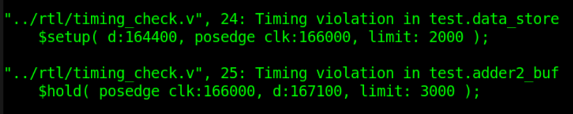
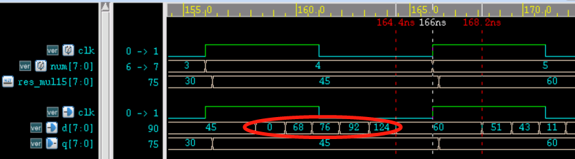
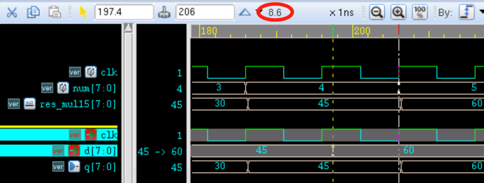
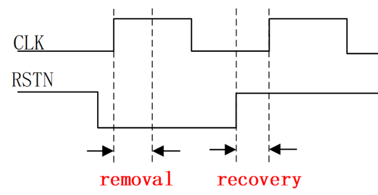
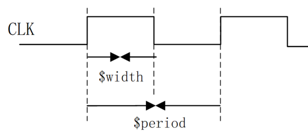

Keywords: setup hold recovery removal width period
Specifying path delays is intended to make the simulation timing closer to the timing of actual digital circuits. Using timing constraints to perform timing simulation on digital designs, checking whether the design has violations of timing constraints, and then modifying it, is also an indispensable process in digital design.
Verilog provides some system tasks for timing checks. These system tasks can only be called inside specify blocks. The following introduces 6 commonly used system tasks for timing checks: $setup, $hold, $recovery, $removal, $width, and $period.
$setup, $hold
The system task $setup is used to check the setup time constraint of components in a design, and $hold is used to check the hold time constraint. Their usage format is as follows:
$setup(data_event, ref_event, setup_limit);
- data_event: the signal being checked, to determine whether it violates the constraint
- ref_event: the reference signal used for checking, usually the clock signal edge
- setup_limit: the configured minimum setup time
IfT( ref_event - data_event) < setup_limit, then a report of the existence ofviolationwill be printed.
$hold(ref_event, data_event, hold_limit);
- data_event: the signal being checked, to determine whether it violates the constraint
- ref_event: the reference signal used for checking, usually the clock signal edge
- hold_limit: the configured minimum hold time
IfT( data_event - ref_event ) < hold_limit, then a report of the existence ofviolationwill be printed.
Note:The positions of the input ports of $setup and $hold are different.
Verilog provides system tasks for checking setup time and hold time simultaneously:
$setuphold (ref_event, data_event, setup_limit, hold_limit);
The following completes an operation of multiplying a number by 15 to illustrate the usage of $setup and $hold.
In Verilog, multiplying a variable by a constant is usually done by shift-and-add. For example, multiplying the variable num by 15 can be expressed as:
num x 15 = (num << 3) + (num << 2) + (num << 1) + num
This operation requires 3 adders. Below, the adder is modeled and path delays are specified.
For the functional description of the full adder, refer toSection 3.1 of the Verilog Tutorial。
Example
module full_adder1(
input Ai, Bi, Ci,
output So, Co);
assign So = Ai ^ Bi ^ Ci ;
assign Co = (Ai & Bi) | (Ci & (Ai | Bi));
specify
(Ai, Bi, Ci *> So) = 1.1 ;
(Ai, Bi *> Co) = 1.3 ;
(Ci => Co) = 1.2 ;
endspecify
endmodule
//instantiation of 8-bit wide adder
module full_adder8(
input [7:0] a , //adder1
input [7:0] b , //adder2
input c , //input carry bit
output [7:0] so , //adding result
output co //output carry bit
);
wire [7:0] co_temp ;
full_adder1 u_adder0(
.Ai (a[0]),
.Bi (b[0]),
.Ci (c==1'b1 ? 1'b1 : 1'b0),
.So (so[0]),
.Co (co_temp[0]));
genvar i ;
generate
for(i=1; i<=7; i=i+1) begin: adder_gen
full_adder1 u_adder(
.Ai (a[i]),
.Bi (b[i]),
.Ci (co_temp[i-1]),
.So (so[i]),
.Co (co_temp[i]));
end
endgenerate
assign co = co_temp[7] ;
endmodule
The 8-bit wide flip-flop is described as follows. Path delays are specified in the flip-flop, and setup and hold time timing checks are added.
The setup time is set to 2ns, and the hold time is set to 3ns.
Example
input [7:0] d ,
input clk ,
output reg [7:0] q);
always @(posedge clk)
q <= d ;
specify
$setup(d, posedge clk, 2);
$hold(posedge clk, d, 3);
(d,clk *> q) = 0.3 ;
endspecify
endmodule
In the testbench, complete the multiply-by-15 operation and output it to the next stage register within one cycle.
Example
module test ;
reg [3:0] a ;
reg [3:0] b ;
wire [3:0] so ;
wire co ;
parameter CYCLE_10NS = 10ns;
reg clk ;
initial begin
clk = 0 ;
# 111 ;
forever begin
#(CYCLE_10NS/2) clk = ~clk ;
end
end
//number to be multiplied by 15
reg [7:0] num = 0 ;
always @(posedge clk) begin
num[3:0] <= num[3:0] + 1 ;
end
// num * 8 + num * 4
wire [7:0] adder1 ;
full_adder8 u1_adder8(
.a (num<<2),
.b (num<<3),
.c (1'b0),
.so (adder1),
.co ());
//num * 2 + num
wire [7:0] adder2 ;
full_adder8 u2_adder8(
.a (num<<1),
.b (num),
.c (1'b0),
.so (adder2),
.co ());
//num x 15
wire [7:0] adder3 ;
full_adder8 u3_adder8(
.a (adder1),
.b (adder2),
.c (1'b0),
.so (adder3),
.co ());
//store the result
wire [7:0] res_mul15 ;
D8 data_store(
.d (adder3),
.clk (clk),
.q (res_mul15));
initial begin
forever begin
#100;
if ($time >= 1000) $finish ;
end
end
endmodule // test
The simulation report then shows printed messages with setup/hold violations. Some screenshots are as follows.

The waveform at the time of the violation is captured as shown below.

The analysis is as follows:
- (1) Both setup time and hold time have violations. Although the output result, which is delayed by one clock cycle after the variable num is multiplied by 15 in the simulation, is correct, the actual circuit is very dangerous.
- (2) The setup time of the signal in the waveform is 166-164.4 = 1.6 ns, which is less than the configured 2ns, so a violation is reported.
- (3) The hold time of the signal in the waveform is 168.2-166 = 2.2 ns, which is less than the configured 3ns, so a violation is reported.
- (4) The red part in the figure is the intermediate process of signal d changing. Because different bits of the signal have different delays, multiple different results may appear in the middle.
Timing optimization
Hold time timing optimization is generally not easy to control at the RTL level description; it belongs to the work scope of backend design engineers, so it will not be discussed here.
This time, we mainly briefly discuss the optimization problem when setup time does not meet the constraint conditions. From the previous section '3.3 Setup Time and Hold Time', we know that the setup time constraint expression is:
Tcq + Tcomb + Tsu <= Tclk + Tskew （1）
- Tcq: delay from the register clock terminal to the Q terminal;
- Tcomb: combinational logic delay in the data path;
- Tsu: setup time;
- Tclk: clock period;
- Tskew: clock skew.
Optimizing this inequality can be considered from the following aspects:
- (1) Select process components with good timing characteristics; the smaller the values of Tcq and Tsu, the better;
- (2) Optimize the combinational logic so that the combinational logic delay Tcomb is as small as possible;
- (3) Reduce the operating clock frequency and increase the clock period Tclk;
- (4) Increase the clock skew Tskew. However, excessive clock skew can cause other problems, such as hold time violations or functional logic errors.
When performing timing optimization at the RTL level, only methods (2) and (3) can be considered.
For example, changing the operating clock period from 10ns to 20ns in the above simulation will avoid the setup violation.
Alternatively, adjust the logic so that the 3 addition operations originally completed in one cycle are distributed over two cycles, with an additional register stage added in between for buffering, to reduce timing pressure. At the same time, the change period of variable num should also become twice the original duration.
The testbench is modified as follows:
Example
`define LOGIC_BUF
module test ;
parameter CYCLE_10NS = 10ns;
reg clk ;
initial begin
clk = 0 ;
# 111 ;
forever begin
#(CYCLE_10NS/2) clk = ~clk ;
end
end
reg slow_flag = 0 ;
always @(posedge clk) begin
`ifdef LOGIC_BUF
slow_flag <= ~slow_flag ;
`else
slow_flag <= 1'b1 ;
`endif
end
reg [7:0] num = 0 ;
always @(posedge clk) begin
if(slow_flag)
num[3:0] <= num[3:0] + 1 ;
end
wire [7:0] adder1 ;
full_adder8 u1_adder8(
.a (num<<2),
.b (num<<3),
.c (1'b0),
.so (adder1),
.co ());
wire [7:0] adder2 ;
full_adder8 u2_adder8(
.a (num<<1),
.b (num),
.c (1'b0),
.so (adder2),
.co ());
//====== for better time=========
//adding buffer
wire [7:0] adder1_r, adder2_r ;
D8 adder1_buf(
.d (adder1),
.clk (clk),
.q (adder1_r));
D8 adder2_buf(
.d (adder2),
.clk (clk),
.q (adder2_r));
`ifdef LOGIC_BUF
wire [7:0] adder1_t = adder1_r ;
wire [7:0] adder2_t = adder2_r ;
`else
wire [7:0] adder1_t = adder1 ;
wire [7:0] adder2_t = adder2 ;
`endif
wire [7:0] adder3 ;
full_adder8 u3_adder8(
.a (adder1_t),
.b (adder2_t),
.c (1'b0),
.so (adder3),
.co ());
wire [7:0] res_mul15 ;
D8 data_store(
.d (adder3),
.clk (clk),
.q (res_mul15));
initial begin
forever begin
#100;
if ($time >= 1000) $finish ;
end
end
endmodule // test
At this time, there are no more violations in the simulation report. The simulation screenshot is as follows.
As can be seen from the figure, the time during which the signal arrives early and remains stable can reach 8.6 ns, fully meeting the setup time timing requirement.
The fundamental principle of this method is to distribute the timing of multiple signal transitions across multiple cycles to meet timing constraint requirements. In addition, pipelined design, parallel design, etc., can also optimize timing.

$recovery, $removal
The concepts of setup time and hold time both appear in the design of synchronous circuits.
For flip-flops with asynchronous reset, the asynchronous reset signal also needs to satisfy recovery time and removal time in order to effectively reset and release the reset, preventing metastability.
When releasing reset, the reset signal needs to return to the non-reset state a period of time before the active clock edge arrives. This period is the recovery time. It is similar to the setup time of a flip-flop under a synchronous clock.
When resetting, the reset signal needs to remain unchanged for a period of time after the active clock edge arrives. This period is the removal time. It is similar to the hold time of a flip-flop under a synchronous clock.
The schematic diagram of recovery and removal time is as follows.

The system tasks $recovery and $removal are used to check recovery and removal time, respectively. Their usage is as follows:
$recovery (ref_event, data_event, recovery_limit) ;
- ref_event: the reference signal used for checking, usually the edge of a clear or reset signal;
- data_event: the signal being checked, usually the clock signal edge.
- recovery_limit: the configured minimum recovery time.
When ref_event (reset) < data_event (clock) and T(data_event - ref_event) < recovery_limit, that is, if the reset signal does not satisfy the recovery time before the clock signal arrives, a violation will be printed in the report.
$removal (ref_event, data_event, removal_limit) ;
- ref_event: the reference signal used for checking, usually the edge of a clear or reset signal;
- data_event: the signal being checked, usually the clock signal edge.
- removal_limit: the configured minimum removal time.
When ref_event (reset) > data_event (clock) and T(ref_event - data_event) > removal_limit, that is, if the reset signal does not satisfy the removal time after the clock signal arrives, a violation will be printed in the report.
Verilog provides system tasks that check both revomal and recovery:
$recrem (ref_event, data_event, recovery_limit, removal_limit);
$width, $period
Some digital designs, such as flash memory, also need to check pulse width or period. For this, Verilog provides system tasks $width and $period respectively. The usage is as follows:
$width(ref_event, time_limit) ;
- ref_event: edge-triggered event
- time_limit: minimum pulse width
$width is used to check the time from the edge-triggered event ref_event to the next opposite transition edge, commonly used for pulse width checking. If the time between two opposite transition edges is less than time_limit, a violation is reported.
$period(ref_event, time_limit) ;
$period is used to check the time from the edge-triggered event ref_event to the next same-direction transition edge, commonly used for clock period checking. If the time between two same-direction transition edges is less than time_limit, the report will print a violation.

The specify block for checking the width and period of signal CLK is described as follows:
Example
$width(posedge CLK, 10);
$period(posedge CLK, 20);
endspecify
Click me to share notes
<p style="font-size:14px;">The note must be an extension of this article's content!</p><br> <p style="font-size:12px;"><a href="../tougao.html" target="_blank">To submit an article, click here</a></p> <p style="font-size:14px;"><a href="./runoob-user-test-intro.html" target="_blank">How to obtain registration invitation code</a></p> <h3 class="text-muted"><i class="fa fa-info-circle" aria-hidden="true"></i> You must <a href=".." class="runoob-pop">login</a> before sharing notes!</h3> <p><a href="./runoob-user-test-intro.html" target="_blank">How to obtain registration invitation code</a></p>